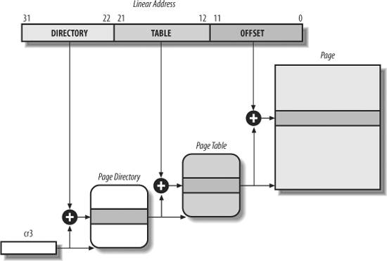
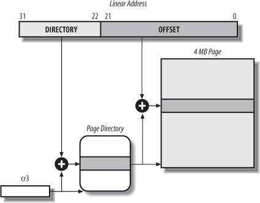
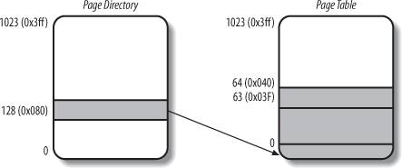
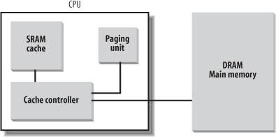
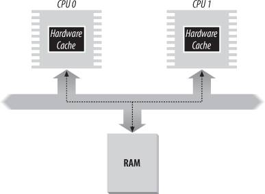

{% include JB/setup %}
{% raw %}
<div>


<a name="understandlk-CHP-2-SECT-4"></a>
<h3 class="docSection1Title">2.4. Paging in Hardware</h3>
<p class="docText1">The paging unit translates linear addresses into physical ones. One key task in the unit is to check the requested access type against the access rights of the linear address. If the memory access is not valid, it generates a Page Fault<a name="IDX-CHP-2-0371"></a> 
 exception (see <a class="pcalibre5 docLink pcalibre1" href="understandlk-CHP-4.html#understandlk-CHP-4">Chapter 4</a> and <a class="pcalibre5 docLink pcalibre1" href="understandlk-CHP-8.html#understandlk-CHP-8">Chapter 8</a>).</p>
<p class="docText1">For the sake of efficiency, linear addresses are grouped in fixed-length intervals called <span class="docEmphasis">pages</span><a name="IDX-CHP-2-0372"></a> 
; contiguous linear addresses within a page are mapped into contiguous physical addresses. In this way, the kernel can specify the physical address and the access rights of a page instead of those of all the linear addresses included in it. Following the usual convention, we shall use the term "page" to refer both to a set of linear addresses and to the data contained in this group of addresses.</p>
<p class="docText1">The paging<a name="IDX-CHP-2-0373"></a> 
 unit thinks of all RAM as partitioned into fixed-length <span class="docEmphasis">page frames</span><a name="IDX-CHP-2-0374"></a> 
 (sometimes referred to as <span class="docEmphasis">physical pages</span><a name="IDX-CHP-2-0375"></a> 
). Each page frame contains a page  that is, the length of a page frame coincides with that of a page. A page frame is a constituent of main memory, and hence it is a storage area. It is important to distinguish a page from a page frame; the former is just a block of data, which may be stored in any page frame or on disk.</p>
<p class="docText1">The data structures that map linear to physical addresses are called <span class="docEmphasis">page tables</span><a name="IDX-CHP-2-0376"></a> 
; they are stored in main memory and must be properly initialized by the kernel before enabling the paging unit.</p>
<p class="docText1">Starting with the 80386, all 80 x 86 processors support paging; it is enabled by setting the <tt class="calibre25">PG</tt> flag of a control register named <tt class="calibre25">cr0</tt><a name="IDX-CHP-2-0377"></a> 
. When <tt class="calibre25">PG = 0</tt>, linear addresses are interpreted as physical addresses.</p>
<a name="understandlk-CHP-2-SECT-4.1"></a>
<h4 class="docSection2Title">2.4.1. Regular Paging</h4><a name="IDX-CHP-2-0378"></a>
<a name="IDX-CHP-2-0379"></a>
<p class="docText1">Starting with the 80386, the paging unit of Intel processors handles 4 KB pages.</p>
<p class="docText1">The 32 bits of a linear address are divided into three fields:</p>
<dl class="docText1"><dt class="calibre7"><br class="calibre7"/><p class="calibre14"><span class="docPubcolor"><span class="docEmphasis">Directory</span></span></p></dt>
<dd class="calibre20"><p class="docList">The most significant 10 bits</p></dd><dt class="calibre7"><br class="calibre7"/><p class="calibre14"><span class="docPubcolor"><span class="docEmphasis">Table</span></span></p></dt>
<dd class="calibre20"><p class="docList">The intermediate 10 bits</p></dd><dt class="calibre7"><br class="calibre7"/><p class="calibre14"><span class="docPubcolor"><span class="docEmphasis">Offset</span></span></p></dt>
<dd class="calibre20"><p class="docList">The least significant 12 bits</p></dd></dl>
<p class="docText1">The translation of linear addresses is accomplished in two steps, each based on a type of translation table. The first translation table is called the <span class="docEmphasis">Page Directory</span>, and the second is called the <span class="docEmphasis">Page Table</span>.<sup class="docFootnote"><a class="pcalibre5 docLink pcalibre1" href="#understandlk-CHP-2-FN1">[*]</a></sup></p><blockquote class="calibre22"><p class="docFootnote1"><sup class="calibre24"><a name="understandlk-CHP-2-FN1">[*]</a></sup> In the discussion that follows, the lowercase "page table" term denotes any page storing the mapping between linear and physical addresses, while the capitalized "Page Table" term denotes a page in the last level of page tables.</p></blockquote>
<p class="docText1">The aim of this two-level<a name="IDX-CHP-2-0380"></a> 
 scheme is to reduce the amount of RAM required for per-process Page Tables. If a simple one-level Page Table was used, then it would require up to 220 entries (i.e., at 4 bytes per entry, 4 MB of RAM) to represent the Page Table for each process (if the process used a full 4 GB linear address space), even though a process does not use all addresses in that range. The two-level scheme reduces the memory by requiring Page Tables only for those virtual memory regions actually used by a process.</p>
<p class="docText1">Each active process must have a Page Directory assigned to it. However, there is no need to allocate RAM for all Page Tables of a process at once; it is more efficient to allocate RAM for a Page Table only when the process effectively needs it.</p>
<p class="docText1">The physical address of the Page Directory in use is stored in a control register named <tt class="calibre25">cr3</tt><a name="IDX-CHP-2-0381"></a> 
. The Directory field within the linear address determines the entry in the Page Directory that points to the proper Page Table. The address's Table field, in turn, determines the entry in the Page Table that contains the physical address of the page frame containing the page. The Offset field determines the relative position within the page frame (see <a class="pcalibre5 docLink pcalibre1" href="#understandlk-CHP-2-FIG-7">Figure 2-7</a>). Because it is 12 bits long, each page consists of 4096 bytes of data.</p>
<a name="understandlk-CHP-2-FIG-7"></a><p class="calibre14"><center class="calibre8">
<h5 class="docFigureTitle">Figure 2-7. Paging by 80 x 86 processors</h5>
</center></p><br class="calibre7"/>
<p class="docText1">Both the Directory and the Table fields are 10 bits long, so Page Directories and Page Tables can include up to 1,024 entries. It follows that a Page Directory can address up to 1024 x 1024 x 4096=2<sup class="calibre37">32</sup> memory cells, as you'd expect in 32-bit addresses.</p>
<p class="docText1">The entries of Page Directories and Page Tables have the same structure. Each entry includes the following fields:</p>
<a name="IDX-CHP-2-0382"></a><a name="IDX-CHP-2-0383"></a><a name="IDX-CHP-2-0384"></a><dl class="docText1"><dt class="calibre7"><br class="calibre7"/><p class="calibre14"><span class="docPubcolor"><span class="docPubcolor"><span class="docMonofont">Present</span></span> flag</span></p></dt>
<dd class="calibre20"><p class="docList">If it is set, the referred-to page (or Page Table) is contained in main memory; if the flag is 0, the page is not contained in main memory and the remaining entry bits may be used by the operating system for its own purposes. If the entry of a Page Table or Page Directory needed to perform an address translation has the <tt class="calibre25">Present</tt> flag cleared, the paging unit stores the linear address in a control register named <tt class="calibre25">cr2</tt><a name="IDX-CHP-2-0382"></a> 
 and generates exception 14: the Page Fault<a name="IDX-CHP-2-0383"></a> 
 exception. (We will see in <a class="pcalibre5 docLink pcalibre1" href="understandlk-CHP-17.html#understandlk-CHP-17">Chapter 17</a> how Linux uses this field.)</p></dd><dt class="calibre7"><br class="calibre7"/><p class="calibre14"><span class="docPubcolor"><span class="docEmphasis">Field containing the 20 most significant bits of a page frame physical address</span></span></p></dt>
<dd class="calibre20"><p class="docList">Because each page frame has a 4-KB capacity, its physical address must be a multiple of 4096, so the 12 least significant bits of the physical address are always equal to 0. If the field refers to a Page Directory, the page frame contains a Page Table; if it refers to a Page Table, the page frame contains a page of data.</p></dd><dt class="calibre7"><br class="calibre7"/><p class="calibre14"><span class="docPubcolor"><span class="docPubcolor"><span class="docMonofont">Accessed</span></span> flag</span></p></dt>
<dd class="calibre20"><p class="docList">Set each time the paging unit addresses the corresponding page frame. This flag may be used by the operating system when selecting pages to be swapped out. The paging unit never resets this flag; this must be done by the operating system.</p></dd><dt class="calibre7"><br class="calibre7"/><p class="calibre14"><span class="docPubcolor"><span class="docPubcolor"><span class="docMonofont">Dirty</span></span> flag</span></p></dt>
<dd class="calibre20"><p class="docList">Applies only to the Page Table entries. It is set each time a write operation is performed on the page frame. As with the <tt class="calibre25">Accessed</tt> flag, <tt class="calibre25">Dirty</tt> may be used by the operating system when selecting pages to be swapped out. The paging unit never resets this flag; this must be done by the operating system.</p></dd><dt class="calibre7"><br class="calibre7"/><p class="calibre14"><span class="docPubcolor"><span class="docPubcolor"><span class="docMonofont">Read/Write</span></span> flag</span></p></dt>
<dd class="calibre20"><p class="docList">Contains the access right (Read/Write or Read) of the page or of the Page Table (see the section "<a class="pcalibre5 docLink pcalibre1" href="#understandlk-CHP-2-SECT-4.3">Hardware Protection Scheme</a>" later in this chapter).</p></dd><dt class="calibre7"><br class="calibre7"/><p class="calibre14"><span class="docPubcolor"><span class="docPubcolor"><span class="docMonofont">User/Supervisor</span></span> flag</span></p></dt>
<dd class="calibre20"><p class="docList">Contains the privilege level required to access the page or Page Table (see the later section "<a class="pcalibre5 docLink pcalibre1" href="#understandlk-CHP-2-SECT-4.3">Hardware Protection Scheme</a>").</p></dd><dt class="calibre7"><br class="calibre7"/><p class="calibre14"><span class="docPubcolor"><span class="docPubcolor"><span class="docMonofont">PCD</span></span> and <span class="docPubcolor"><span class="docMonofont">PWT</span></span> flags</span></p></dt>
<dd class="calibre20"><p class="docList">Controls the way the page or Page Table is handled by the hardware cache (see the section "<a class="pcalibre5 docLink pcalibre1" href="#understandlk-CHP-2-SECT-4.7">Hardware Cache</a>" later in this chapter).</p></dd><dt class="calibre7"><br class="calibre7"/><p class="calibre14"><span class="docPubcolor"><span class="docPubcolor"><span class="docMonofont">Page Size</span></span> flag</span></p></dt>
<dd class="calibre20"><p class="docList">Applies only to Page Directory entries. If it is set, the entry refers to a 2 MB- or 4 MB-long page frame (see the following sections).</p></dd><dt class="calibre7"><br class="calibre7"/><p class="calibre14"><span class="docPubcolor"><span class="docPubcolor"><span class="docMonofont">Global</span></span> flag</span></p></dt>
<dd class="calibre20"><p class="docList">Applies only to Page Table entries. This flag was introduced in the Pentium Pro to prevent frequently used pages from being flushed from the TLB cache (see the section "<a class="pcalibre5 docLink pcalibre1" href="#understandlk-CHP-2-SECT-4.8">Translation Lookaside Buffers (TLB)</a>" later in this chapter). It works only if the Page Global Enable (<tt class="calibre25">PGE</tt>) flag of register <tt class="calibre25">cr4</tt><a name="IDX-CHP-2-0384"></a> 
 is set.</p></dd></dl>
<a name="understandlk-CHP-2-SECT-4.2"></a>
<h4 class="docSection2Title">2.4.2. Extended Paging</h4><a name="IDX-CHP-2-0385"></a>
<a name="IDX-CHP-2-0386"></a>
<a name="IDX-CHP-2-0387"></a>
<p class="docText1">Starting with the Pentium model, 80 x 86 microprocessors introduce <span class="docEmphasis">extended paging</span><a name="IDX-CHP-2-0388"></a> 
, which allows page frames to be 4 MB instead of 4 KB in size (see <a class="pcalibre5 docLink pcalibre1" href="#understandlk-CHP-2-FIG-8">Figure 2-8</a>). Extended paging is used to translate large contiguous linear address ranges into corresponding physical ones; in these cases, the kernel can do without intermediate Page Tables and thus save memory and preserve TLB entries (see the section "<a class="pcalibre5 docLink pcalibre1" href="#understandlk-CHP-2-SECT-4.8">Translation Lookaside Buffers (TLB)</a>").</p>
<a name="understandlk-CHP-2-FIG-8"></a><p class="calibre14"><center class="calibre8">
<h5 class="docFigureTitle">Figure 2-8. Extended paging</h5>
</center></p><br class="calibre7"/>
<p class="docText1">As mentioned in the previous section, extended paging is enabled by setting the <tt class="calibre25">Page Size</tt> flag of a Page Directory entry. In this case, the paging unit divides the 32 bits of a linear address into two fields:</p>
<dl class="docText1"><dt class="calibre7"><br class="calibre7"/><p class="calibre14"><span class="docPubcolor"><span class="docEmphasis">Directory</span></span></p></dt>
<dd class="calibre20"><p class="docList">The most significant 10 bits</p></dd><dt class="calibre7"><br class="calibre7"/><p class="calibre14"><span class="docPubcolor"><span class="docEmphasis">Offset</span></span></p></dt>
<dd class="calibre20"><p class="docList">The remaining 22 bits</p></dd></dl>
<p class="docText1">Page Directory entries for extended paging are the same as for normal paging, except that:</p>
<ul class="calibre11"><li class="calibre12"><p class="docText1">The <tt class="calibre25">Page Size</tt> flag must be set.</p></li><li class="calibre12"><p class="docText1">Only the 10 most significant bits of the 20-bit physical address field are significant. This is because each physical address is aligned on a 4-MB boundary, so the 22 least significant bits of the address are 0.</p></li></ul>
<p class="docText1">Extended paging coexists with regular paging; it is enabled by setting the <tt class="calibre25">PSE</tt> flag of the <tt class="calibre25">cr4</tt> processor register.</p>
<a name="understandlk-CHP-2-SECT-4.3"></a>
<h4 class="docSection2Title">2.4.3. Hardware Protection Scheme</h4><a name="IDX-CHP-2-0389"></a>
<p class="docText1">The paging unit uses a different protection scheme from the segmentation unit. While 80 x 86 processors allow four possible privilege levels to a segment, only two privilege levels are associated with pages and Page Tables, because privileges are controlled by the <tt class="calibre25">User/Supervisor</tt> flag mentioned in the earlier section "<a class="pcalibre5 docLink pcalibre1" href="#understandlk-CHP-2-SECT-4.1">Regular Paging</a>." When this flag is 0, the page can be addressed only when the <tt class="calibre25">CPL</tt> is less than 3 (this means, for Linux, when the processor is in Kernel Mode). When the flag is 1, the page can always be addressed.</p>
<p class="docText1">Furthermore, instead of the three types of access rights (Read, Write, and Execute) associated with segments, only two types of access rights (Read and Write) are associated with pages. If the <tt class="calibre25">Read/Write</tt> flag of a Page Directory or Page Table entry is equal to 0, the corresponding Page Table or page can only be read; otherwise it can be read and written.<sup class="docFootnote"><a class="pcalibre5 docLink pcalibre1" href="#understandlk-CHP-2-FN2">[*]</a></sup></p><blockquote class="calibre22"><p class="docFootnote1"><sup class="calibre24"><a name="understandlk-CHP-2-FN2">[*]</a></sup> Recent Intel Pentium 4 processors sport an <tt class="calibre42">NX</tt> (No eXecute) flag in each 64-bit Page Table entry (PAE<a name="IDX-CHP-2-0390"></a> 
 must be enabled, see the section "<a class="pcalibre5 docLink pcalibre1" href="#understandlk-CHP-2-SECT-4.5">The Physical Address Extension (PAE) Paging Mechanism</a>" later in this chapter). Linux 2.6.11 supports this hardware feature.</p></blockquote>
<a name="understandlk-CHP-2-SECT-4.4"></a>
<h4 class="docSection2Title">2.4.4. An Example of Regular Paging</h4>
<p class="docText1">A simple example will help in clarifying how regular paging works. Let's assume that the kernel assigns the linear address space between <tt class="calibre25">0x20000000</tt> and <tt class="calibre25">0x2003ffff</tt> to a running process.<sup class="docFootnote"><a class="pcalibre5 docLink pcalibre1" href="#understandlk-CHP-2-FN3">[]</a></sup> This space consists of exactly 64 pages. We don't care about the physical addresses of the page frames containing the pages; in fact, some of them might not even be in main memory. We are interested only in the remaining fields of the Page Table entries.</p><blockquote class="calibre22"><p class="docFootnote1"><sup class="calibre24"><a name="understandlk-CHP-2-FN3">[]</a></sup> As we shall see in the following chapters, the 3 GB linear address space is an upper limit, but a User Mode process is allowed to reference only a subset of it.</p></blockquote>
<p class="docText1">Let's start with the 10 most significant bits of the linear addresses assigned to the process, which are interpreted as the Directory field by the paging unit. The addresses start with a 2 followed by zeros, so the 10 bits all have the same value, namely <tt class="calibre25">0x080</tt> or 128 decimal. Thus the Directory field in all the addresses refers to the 129th entry of the process Page Directory. The corresponding entry must contain the physical address of the Page Table assigned to the process (see <a class="pcalibre5 docLink pcalibre1" href="#understandlk-CHP-2-FIG-9">Figure 2-9</a>). If no other linear addresses are assigned to the process, all the remaining 1,023 entries of the Page Directory are filled with zeros.</p>
<a name="understandlk-CHP-2-FIG-9"></a><p class="calibre14"><center class="calibre8">
<h5 class="docFigureTitle">Figure 2-9. An example of paging</h5>
</center></p><br class="calibre7"/>
<p class="docText1">The values assumed by the intermediate 10 bits, (that is, the values of the Table field) range from 0 to <tt class="calibre25">0x03f</tt>, or from 0 to 63 decimal. Thus, only the first 64 entries of the Page Table are valid. The remaining 960 entries are filled with zeros.</p>
<p class="docText1">Suppose that the process needs to read the byte at linear address <tt class="calibre25">0x20021406</tt>. This address is handled by the paging unit as follows:</p>
<div class="calibre44"><ol class="docList1" type="1"><li class="calibre12"><div class="calibre45"><p class="docList">The Directory field <tt class="calibre25">0x80</tt> is used to select entry <tt class="calibre25">0x80</tt> of the Page Directory, which points to the Page Table associated with the process's pages.</p></div></li><li class="calibre12"><div class="calibre45"><p class="docList">The Table field <tt class="calibre25">0x21</tt> is used to select entry <tt class="calibre25">0x21</tt> of the Page Table, which points to the page frame containing the desired page.</p></div></li><li class="calibre12"><div class="calibre45"><p class="docList">Finally, the Offset field <tt class="calibre25">0x406</tt> is used to select the byte at offset <tt class="calibre25">0x406</tt> in the desired page frame.</p></div></li></ol></div>
<p class="docText1">If the <tt class="calibre25">Present</tt> flag of the <tt class="calibre25">0x21</tt> entry of the Page Table is cleared, the page is not present in main memory; in this case, the paging unit issues a Page Fault<a name="IDX-CHP-2-0391"></a> 
 exception while translating the linear address. The same exception is issued whenever the process attempts to access linear addresses outside of the interval delimited by <tt class="calibre25">0x20000000</tt> and <tt class="calibre25">0x2003ffff</tt>, because the Page Table entries not assigned to the process are filled with zeros; in particular, their <tt class="calibre25">Present</tt> flags are all cleared.</p>
<a name="understandlk-CHP-2-SECT-4.5"></a>
<h4 class="docSection2Title">2.4.5. The Physical Address Extension (PAE) Paging Mechanism</h4><a name="IDX-CHP-2-0392"></a>
<a name="IDX-CHP-2-0393"></a>
<a name="IDX-CHP-2-0394"></a>
<a name="IDX-CHP-2-0395"></a>
<p class="docText1">The amount of RAM supported by a processor is limited by the number of address pins connected to the address bus. Older Intel processors from the 80386 to the Pentium used 32-bit physical addresses. In theory, up to 4 GB of RAM could be installed on such systems; in practice, due to the linear address space requirements of User Mode processes, the kernel cannot directly address more than 1 GB of RAM, as we will see in the later section "<a class="pcalibre5 docLink pcalibre1" href="understandlk-CHP-2-SECT-5.html#understandlk-CHP-2-SECT-5">Paging in Linux</a>."</p>
<p class="docText1">However, big servers that need to run hundreds or thousands of processes at the same time require more than 4 GB of RAM, and in recent years this created a pressure on Intel to expand the amount of RAM supported on the 32-bit 80 x 86 architecture.</p>
<p class="docText1">Intel has satisfied these requests by increasing the number of address pins on its processors from 32 to 36. Starting with the Pentium Pro, all Intel processors are now able to address up to 2<sup class="calibre37">36</sup> = 64 GB of RAM. However, the increased range of physical addresses can be exploited only by introducing a new paging mechanism that translates 32-bit linear addresses into 36-bit physical ones.</p>
<p class="docText1">With the Pentium Pro processor, Intel introduced a mechanism called <span class="docEmphasis">Physical Address Extension</span> (<span class="docEmphasis">PAE</span>). Another mechanism, Page Size Extension (PSE-36), was introduced in the Pentium III processor, but Linux does not use it, and we won't discuss it further in this book.</p>
<p class="docText1">PAE is activated by setting the Physical Address Extension (<tt class="calibre25">PAE</tt>) flag in the <tt class="calibre25">cr4</tt> control register. The Page Size (<tt class="calibre25">PS</tt>) flag in the page directory entry enables large page sizes (2 MB when PAE is enabled).</p>
<p class="docText1">Intel has changed the paging mechanism in order to support PAE.</p>
<ul class="calibre11"><li class="calibre12"><p class="docText1">The 64 GB of RAM are split into 2<sup class="calibre37">24</sup> distinct page frames, and the physical address field of Page Table entries has been expanded from 20 to 24 bits. Because a PAE Page Table entry must include the 12 flag bits (described in the earlier section "<a class="pcalibre5 docLink pcalibre1" href="#understandlk-CHP-2-SECT-4.1">Regular Paging</a>") and the 24 physical address bits, for a grand total of 36, the Page Table entry size has been doubled from 32 bits to 64 bits. As a result, a 4-KB PAE Page Table includes 512 entries instead of 1,024.</p></li><li class="calibre12"><p class="docText1">A new level of Page Table called the Page Directory Pointer Table (PDPT) consisting of four 64-bit entries has been introduced.</p></li><li class="calibre12"><p class="docText1">The <tt class="calibre25">cr3</tt><a name="IDX-CHP-2-0396"></a> 
 control register contains a 27-bit Page Directory Pointer Table base address field. Because PDPTs are stored in the first 4 GB of RAM and aligned to a multiple of 32 bytes (2<sup class="calibre37">5</sup>), 27 bits are sufficient to represent the base address of such tables.</p></li><li class="calibre12"><p class="docText1">When mapping linear addresses to 4 KB pages (<tt class="calibre25">PS</tt> flag cleared in Page Directory entry), the 32 bits of a linear address are interpreted in the following way:</p><dl class="docList2"><dt class="calibre7"><br class="calibre7"/><p class="calibre14"><span class="docPubcolor"><span class="docPubcolor"><span class="docMonofont">cr3</span></span></span></p></dt>
<dd class="calibre20"><p class="docList">Points to a PDPT</p></dd><dt class="calibre7"><br class="calibre7"/><p class="calibre14"><span class="docPubcolor"><span class="docEmphasis">bits 3130</span></span></p></dt>
<dd class="calibre20"><p class="docList">Point to 1 of 4 possible entries in PDPT</p></dd><dt class="calibre7"><br class="calibre7"/><p class="calibre14"><span class="docPubcolor"><span class="docEmphasis">bits 2921</span></span></p></dt>
<dd class="calibre20"><p class="docList">Point to 1 of 512 possible entries in Page Directory</p></dd><dt class="calibre7"><br class="calibre7"/><p class="calibre14"><span class="docPubcolor"><span class="docEmphasis">bits 2012</span></span></p></dt>
<dd class="calibre20"><p class="docList">Point to 1 of 512 possible entries in Page Table</p></dd><dt class="calibre7"><br class="calibre7"/><p class="calibre14"><span class="docPubcolor"><span class="docEmphasis">bits 11-0</span></span></p></dt>
<dd class="calibre20"><p class="docList">Offset of 4-KB page</p></dd></dl></li><li class="calibre12"><p class="docText1">When mapping linear addresses to 2-MB pages (<tt class="calibre25">PS</tt> flag set in Page Directory entry), the 32 bits of a linear address are interpreted in the following way:</p><dl class="docList2"><dt class="calibre7"><br class="calibre7"/><p class="calibre14"><span class="docPubcolor"><span class="docPubcolor"><span class="docMonofont">cr3</span></span></span></p></dt>
<dd class="calibre20"><p class="docList">Points to a PDPT</p></dd><dt class="calibre7"><br class="calibre7"/><p class="calibre14"><span class="docPubcolor"><span class="docEmphasis">bits 31-30</span></span></p></dt>
<dd class="calibre20"><p class="docList">Point to 1 of 4 possible entries in PDPT</p></dd><dt class="calibre7"><br class="calibre7"/><p class="calibre14"><span class="docPubcolor"><span class="docEmphasis">bits 2921</span></span></p></dt>
<dd class="calibre20"><p class="docList">Point to 1 of 512 possible entries in Page Directory</p></dd><dt class="calibre7"><br class="calibre7"/><p class="calibre14"><span class="docPubcolor"><span class="docEmphasis">bits 20-0</span></span></p></dt>
<dd class="calibre20"><p class="docList">Offset of 2-MB page</p></dd></dl></li></ul>
<p class="docText1">To summarize, once <tt class="calibre25">cr3</tt> is set, it is possible to address up to 4 GB of RAM. If we want to address more RAM, we'll have to put a new value in <tt class="calibre25">cr3</tt> or change the content of the PDPT. However, the main problem with PAE is that linear addresses are still 32 bits long. This forces kernel programmers to reuse the same linear addresses to map different areas of RAM. We'll sketch how Linux initializes Page Tables when PAE is enabled in the later section, "<a class="pcalibre5 docLink pcalibre1" href="understandlk-CHP-2-SECT-5.html#understandlk-CHP-2-SECT-5.5.4">Final kernel Page Table when RAM size is more than 4096 MB</a>." Clearly, PAE does not enlarge the linear address space of a process, because it deals only with physical addresses. Furthermore, only the kernel can modify the page tables of the processes, thus a process running in User Mode cannot use a physical address space larger than 4 GB. On the other hand, PAE allows the kernel to exploit up to 64 GB of RAM, and thus to increase significantly the number of processes in the system.</p>
<a name="understandlk-CHP-2-SECT-4.6"></a>
<h4 class="docSection2Title">2.4.6. Paging for 64-bit Architectures</h4><a name="IDX-CHP-2-0397"></a>
<p class="docText1">As we have seen in the previous sections, two-level<a name="IDX-CHP-2-0398"></a> 
 paging is commonly used by 32-bit microprocessors<sup class="docFootnote"><a class="pcalibre5 docLink pcalibre1" href="#understandlk-CHP-2-FN4">[*]</a></sup>. Two-level paging, however, is not suitable for computers that adopt a 64-bit architecture. Let's use a thought experiment to explain why:</p><blockquote class="calibre22"><p class="docFootnote1"><sup class="calibre24"><a name="understandlk-CHP-2-FN4">[*]</a></sup> The third level of paging present in 80 x 86 processors with PAE enabled has been introduced only to lower from 1024 to 512 the number of entries in the Page Directory and Page Tables. This enlarges the Page Table entries from 32 bits to 64 bits so that they can store the 24 most significant bits of the physical address.</p></blockquote>
<p class="docText1">Start by assuming a standard page size of 4 KB. Because 1 KB covers a range of 2<sup class="calibre37">10</sup> addresses, 4 KB covers 2<sup class="calibre37">12</sup> addresses, so the Offset field is 12 bits. This leaves up to 52 bits of the linear address to be distributed between the Table and the Directory fields. If we now decide to use only 48 of the 64 bits for addressing (this restriction leaves us with a comfortable 256 TB address space!), the remaining 48<tt class="calibre25">-</tt>12 = 36 bits will have to be split among Table and the Directory fields. If we now decide to reserve 18 bits for each of these two fields, both the Page Directory and the Page Tables of each process should include 2<sup class="calibre37">18</sup> entries  that is, more than 256,000 entries.</p>
<p class="docText1">For that reason, all hardware paging systems for 64-bit processors make use of additional paging levels. The number of levels used depends on the type of processor. <a class="pcalibre5 docLink pcalibre1" href="#understandlk-CHP-2-TABLE-4">Table 2-4</a> summarizes the main characteristics of the hardware paging systems used by some 64-bit platforms supported by Linux. Please refer to the section "<a class="pcalibre5 docLink pcalibre1" href="understandlk-CHP-1-SECT-2.html#understandlk-CHP-1-SECT-2">Hardware Dependency</a>" in <a class="pcalibre5 docLink pcalibre1" href="understandlk-CHP-1.html#understandlk-CHP-1">Chapter 1</a> for a short description of the hardware associated with the platform name.</p>
<a name="understandlk-CHP-2-TABLE-4"></a><p class="calibre14"><table cellspacing="0" frame="hsides" rules="all" cellpadding="4" width="100%" class="calibre15"><caption class="calibre33"><h5 class="docFigureTitle">Table 2-4. Paging levels in some 64-bit architectures</h5></caption><colgroup class="calibre16"><col class="calibre17"/><col class="calibre17"/><col class="calibre17"/><col class="calibre17"/><col class="calibre17"/></colgroup><thead class="calibre18"><tr class="calibre34"><th class="thead" scope="col"><p class="docText1"><span class="calibre5">Platform name</span></p></th><th class="thead" scope="col"><p class="docText1"><span class="calibre5">Page size</span></p></th><th class="thead" scope="col"><p class="docText1"><span class="calibre5">Number of address bits used</span></p></th><th class="thead" scope="col"><p class="docText1"><span class="calibre5">Number of paging levels</span></p></th><th class="thead" scope="col"><p class="docText1"><span class="calibre5">Linear address splitting</span></p></th></tr></thead><tr class="calibre2"><td class="docTableCell"><p class="docText2">alpha</p></td><td class="docTableCell"><p class="docText2">8 KB <a class="pcalibre5 docLink pcalibre1" href="#TFN1"><sup class="calibre37">a</sup></a></p></td><td class="docTableCell"><p class="docText2">43</p></td><td class="docTableCell"><p class="docText2">3</p></td><td class="docTableCell"><p class="docText2">10 + 10 + 10 + 13</p></td></tr><tr class="calibre2"><td class="docTableCell"><p class="docText2">ia64</p></td><td class="docTableCell"><p class="docText2">4 KB <sup class="calibre37">a</sup></p></td><td class="docTableCell"><p class="docText2">39</p></td><td class="docTableCell"><p class="docText2">3</p></td><td class="docTableCell"><p class="docText2">9 + 9 + 9 + 12</p></td></tr><tr class="calibre2"><td class="docTableCell"><p class="docText2">ppc64</p></td><td class="docTableCell"><p class="docText2">4 KB</p></td><td class="docTableCell"><p class="docText2">41</p></td><td class="docTableCell"><p class="docText2">3</p></td><td class="docTableCell"><p class="docText2">10 + 10 + 9 + 12</p></td></tr><tr class="calibre2"><td class="docTableCell"><p class="docText2">sh64</p></td><td class="docTableCell"><p class="docText2">4 KB</p></td><td class="docTableCell"><p class="docText2">41</p></td><td class="docTableCell"><p class="docText2">3</p></td><td class="docTableCell"><p class="docText2">10 + 10 + 9 + 12</p></td></tr><tr class="calibre2"><td class="docTableCell"><p class="docText2">x86_64</p></td><td class="docTableCell"><p class="docText2">4 KB</p></td><td class="docTableCell"><p class="docText2">48</p></td><td class="docTableCell"><p class="docText2">4</p></td><td class="docTableCell"><p class="docText2">9 + 9 + 9 + 9 + 12</p></td></tr><tr class="calibre2"><td class="docTableFooter" colspan="5"><p class="docText3"><sup class="calibre37">a</sup> This architecture supports different page sizes; we select a typical page size adopted by Linux.</p></td></tr></table></p><br class="calibre7"/>
<p class="docText1">As we will see in the section "<a class="pcalibre5 docLink pcalibre1" href="understandlk-CHP-2-SECT-5.html#understandlk-CHP-2-SECT-5">Paging in Linux</a>" later in this chapter, Linux succeeds in providing a common paging model that fits most of the supported hardware paging systems.</p>
<a name="understandlk-CHP-2-SECT-4.7"></a>
<h4 class="docSection2Title">2.4.7. Hardware Cache</h4><a name="IDX-CHP-2-0399"></a>
<a name="IDX-CHP-2-0400"></a>
<a name="IDX-CHP-2-0401"></a>
<a name="IDX-CHP-2-0402"></a>
<a name="IDX-CHP-2-0403"></a>
<a name="IDX-CHP-2-0404"></a>
<p class="docText1">Today's microprocessors have clock rates of several gigahertz, while dynamic RAM (DRAM) chips have access times in the range of hundreds of clock cycles. This means that the CPU may be held back considerably while executing instructions that require fetching operands from RAM and/or storing results into RAM.</p>
<p class="docText1">Hardware cache memories were introduced to reduce the speed mismatch between CPU and RAM. They are based on the well-known <span class="docEmphasis">locality principle</span><a name="IDX-CHP-2-0405"></a> 
, which holds both for programs and data structures. This states that because of the cyclic structure of programs and the packing of related data into linear arrays, addresses close to the ones most recently used have a high probability of being used in the near future. It therefore makes sense to introduce a smaller and faster memory that contains the most recently used code and data. For this purpose, a new unit called the <span class="docEmphasis">line</span> was introduced into the 80 x 86 architecture. It consists of a few dozen contiguous bytes that are transferred in burst mode between the slow DRAM and the fast on-chip static RAM (SRAM) used to implement caches.</p>
<p class="docText1">The cache is subdivided into subsets of lines<a name="IDX-CHP-2-0406"></a> 
. At one extreme, the cache can be <span class="docEmphasis">direct mapped</span><a name="IDX-CHP-2-0407"></a> 
, in which case a line in main memory is always stored at the exact same location in the cache. At the other extreme, the cache is <span class="docEmphasis">fully associative</span><a name="IDX-CHP-2-0408"></a> 
, meaning that any line in memory can be stored at any location in the cache. But most caches are to some degree <span class="docEmphasis">N-way set associative</span><a name="IDX-CHP-2-0409"></a> 
, where any line of main memory can be stored in any one of <span class="docEmphasis">N</span> lines of the cache. For instance, a line of memory can be stored in two different lines of a two-way set associative cache.</p>
<p class="docText1">As shown in <a class="pcalibre5 docLink pcalibre1" href="#understandlk-CHP-2-FIG-10">Figure 2-10</a>, the cache unit is inserted between the paging unit and the main memory. It includes both a <span class="docEmphasis">hardware cache</span> memory and a <span class="docEmphasis">cache controller</span>. The cache memory stores the actual lines of memory. The cache controller stores an array of entries, one entry for each line of the cache memory. Each entry includes a <span class="docEmphasis">tag</span> and a few flags that describe the status of the cache line. The tag consists of some bits that allow the cache controller to recognize the memory location currently mapped by the line. The bits of the memory's physical address are usually split into three groups: the most significant ones correspond to the tag, the middle ones to the cache controller subset index, and the least significant ones to the offset within the line.</p>
<a name="understandlk-CHP-2-FIG-10"></a><p class="calibre14"><center class="calibre8">
<h5 class="docFigureTitle">Figure 2-10. Processor hardware cache</h5>
</center></p><br class="calibre7"/>
<p class="docText1">When accessing a RAM memory cell, the CPU extracts the subset index from the physical address and compares the tags of all lines in the subset with the high-order bits of the physical address. If a line with the same tag as the high-order bits of the address is found, the CPU has a <span class="docEmphasis">cache hit</span>; otherwise, it has a <span class="docEmphasis">cache miss</span>.</p>
<p class="docText1">When a cache hit occurs, the cache controller behaves differently, depending on the access type. For a read operation, the controller selects the data from the cache line and transfers it into a CPU register; the RAM is not accessed and the CPU saves time, which is why the cache system was invented. For a write operation, the controller may implement one of two basic strategies called <span class="docEmphasis">write-through</span><a name="IDX-CHP-2-0410"></a> 
 and <span class="docEmphasis">write-back</span><a name="IDX-CHP-2-0411"></a> 
. In a write-through, the controller always writes into both RAM and the cache line, effectively switching off the cache for write operations. In a write-back, which offers more immediate efficiency, only the cache line is updated and the contents of the RAM are left unchanged. After a write-back, of course, the RAM must eventually be updated. The cache controller writes the cache line back into RAM only when the CPU executes an instruction requiring a flush of cache entries or when a FLUSH hardware signal occurs (usually after a cache miss).</p>
<p class="docText1">When a cache miss occurs, the cache line is written to memory, if necessary, and the correct line is fetched from RAM into the cache entry.</p>
<p class="docText1">Multiprocessor systems have a separate hardware cache for every processor, and therefore they need additional hardware circuitry to synchronize the cache contents. As shown in <a class="pcalibre5 docLink pcalibre1" href="#understandlk-CHP-2-FIG-11">Figure 2-11</a>, each CPU has its own local hardware cache. But now updating becomes more time consuming: whenever a CPU modifies its hardware cache, it must check whether the same data is contained in the other hardware cache; if so, it must notify the other CPU to update it with the proper value. This activity is often called <span class="docEmphasis">cache snooping</span><a name="IDX-CHP-2-0412"></a> 
. Luckily, all this is done at the hardware level and is of no concern to the kernel.</p>
<a name="understandlk-CHP-2-FIG-11"></a><p class="calibre14"><center class="calibre8">
<h5 class="docFigureTitle">Figure 2-11. The caches in a dual processor</h5>
</center></p><br class="calibre7"/>
<p class="docText1">Cache technology is rapidly evolving. For example, the first Pentium models included a single on-chip cache called the <span class="docEmphasis">L1-cache</span>. More recent models also include other larger, slower on-chip caches called the <span class="docEmphasis">L2-cache</span>, <span class="docEmphasis">L3-cache</span>, etc. The consistency between the cache levels is implemented at the hardware level. Linux ignores these hardware details and assumes there is a single cache.</p>
<p class="docText1">The <tt class="calibre25">CD</tt> flag of the <tt class="calibre25">cr0</tt><a name="IDX-CHP-2-0413"></a> 
 processor register is used to enable or disable the cache circuitry. The <tt class="calibre25">NW</tt> flag, in the same register, specifies whether the write-through or the write-back strategy is used for the caches.</p>
<p class="docText1">Another interesting feature of the Pentium cache is that it lets an operating system associate a different cache management policy with each page frame. For this purpose, each Page Directory and each Page Table entry includes two flags: <tt class="calibre25">PCD</tt> (Page Cache Disable), which specifies whether the cache must be enabled or disabled while accessing data included in the page frame; and <tt class="calibre25">PWT</tt> (Page Write-Through), which specifies whether the write-back or the write-through strategy must be applied while writing data into the page frame. Linux clears the <tt class="calibre25">PCD</tt> and <tt class="calibre25">PWT</tt> flags of all Page Directory and Page Table entries; as a result, caching is enabled for all page frames, and the write-back strategy is always adopted for writing.</p>
<a name="understandlk-CHP-2-SECT-4.8"></a>
<h4 class="docSection2Title">2.4.8. Translation Lookaside Buffers (TLB)</h4><a name="IDX-CHP-2-0414"></a>
<a name="IDX-CHP-2-0415"></a>
<a name="IDX-CHP-2-0416"></a>
<p class="docText1">Besides general-purpose hardware caches, 80 x 86 processors include another cache called <span class="docEmphasis">Translation Lookaside Buffers</span> (<span class="docEmphasis">TLB</span>) to speed up linear address translation. When a linear address is used for the first time, the corresponding physical address is computed through slow accesses to the Page Tables in RAM. The physical address is then stored in a TLB entry so that further references to the same linear address can be quickly translated.</p>
<p class="docText1">In a multiprocessor system, each CPU has its own TLB, called the <span class="docEmphasis">local TLB</span> of the CPU. Contrary to the hardware cache, the corresponding entries of the TLB need not be synchronized, because processes running on the existing CPUs may associate the same linear address with different physical ones.</p>
<p class="docText1">When the <tt class="calibre25">cr3</tt><a name="IDX-CHP-2-0417"></a> 
 control register of a CPU is modified, the hardware automatically invalidates all entries of the local TLB, because a new set of page tables is in use and the TLBs<a name="IDX-CHP-2-0418"></a> 
 are pointing to old data.</p>
<a href="31071535.html"></a>
<br class="calibre7"/>

</div>

{% endraw %}

